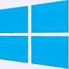

COMS10016 | Week 01 | Preparation
SYSTEM SETUP FOR WINDOWS 10 or 11
This is a brief tutorial on how to setup your personal Windows 10 or 11 64bit Home or Professional system to be ready for the COMS10016 unit.
The below steps represent one out of many ways of setting up your Windows 10 or 11 system for the unit. Before you start make sure Windows 10 or 11 is up-to-date with respect to updates and features.
It is your responsibility to keep your personal system and passwords safe.
CHECK SYSTEM COMPATIBILITY
- Windows search "about" (i.e. hold the Windows key down and simultaneously press "s" so the Windows search bar appears, then type "about" into the search bar).
- Click "About your PC" in the results and the system specifications window should open.
- Your system is compatible only if:
- Your "System type" is "64-bit operating system, x64-based processor".
- Your system is not in S-Mode and your "Edition" is either "Windows 10 Home" or "Windows 10 Professional" or "Windows 11 Home" or "Windows 11 Professional" without "S Mode". If you need to switch out of S-Mode, follow the instructions on the Microsoft Support Page.
- If you use Windows 10 then "Version" must be at least 2004, including 20H2, 20H2, 21H1, 21H2. Version 1909 and before are unsupported. If you are running Version 1909 or earlier, you must update your system by going to "Settings -> Update & Security -> Windows Update", then checking for updates and installing any that are available.
ACTIVATE WSL2 (WINDOWS SUBSYSTEM FOR LINUX) IN WINDOWS 10 or 11
- Windows search "powershell".
- Right-click "Windows PowerShell" (not "Windows Powershell (x86)") and click "Run as administrator".
- Click yes on the consent prompt and an elevated PowerShell will open.
- In PowerShell, run
wsl --set-default-version 2 (i.e. type "wsl --set-default-version 2" and press enter), then run wsl --install -d Ubuntu. If PowerShell can't find the wsl command, make sure your Windows is fully updated, then try again. If it still isn't there, make sure PowerShell is in 64-bit mode by running [Environment]::Is64BitProcess (which will return "True" if it is and "False" if it isn't).
- Once the command finishes, restart your computer (unless an Ubuntu window opens immediately, in which case just continue to the next step).
- Soon after your computer reboots, an Ubuntu window should open and complete the installation process. This may take a few minutes.
- Once the installation is complete, you will be prompted to enter a UNIX username and password in the Ubuntu window. Make sure you remember them. You can use any username, but many people just use their name in lowercase (eg. "tilo"). Important: When you enter your password it won't display any characters as you type. This is not a bug, your password is still being entered.
- Update Ubuntu by running
sudo apt update (this checks for upgrades), then sudo apt upgrade (this installs the upgrades). When asked "Do you want to continue? [Y/n]", press enter to select the default "Y"/"Yes" option, and wait for the upgrade to complete. [Side note: apt is a "package manager", which does what it says on the tin and manages packages/software on your system. sudo stands for "SuperUser DO" and you add it to the front of a command to run that command as the superuser (a.k.a. administrator or "root").]
- Your Ubuntu files are stored in a separate filesystem to your Windows files, which makes difficult to access from Windows (and you shouldn't try to). However, you can access your Windows C drive from Ubuntu by going to the "/mnt/c" directory in the Ubuntu terminal (if your Windows is on the D drive, it would be "/mnt/d" instead etc.). For convenience, you can create a "symbolic link" (similar to a shortcut) from your Linux home directory to your Windows files by running:
ln -s /mnt/c/Users/[insert your Windows username here]/Documents ~/WindowsDocuments (e.g. ln -s /mnt/c/Users/tilo/Documents ~/WindowsDocuments)
- Whenever you want to open a new Ubuntu terminal, you can Windows search "Ubuntu" and click the Ubuntu application.
INSTALL THE CLANG COMPILER
- In an Ubuntu terminal, run
sudo apt install clang
INSTALL HASKELL, QUICKCHECK, and HLS
- In an Ubuntu terminal, first install the dependencies for GHCup by running
sudo apt install build-essential curl libffi-dev libffi8 libgmp-dev libgmp10 libncurses-dev libncurses5 libtinfo5
- Once that's done, run
curl --proto '=https' --tlsv1.2 -sSf https://get-ghcup.haskell.org | sh
- Press enter to proceed
- When asked about adding the required PATH variable to .bashrc, select "Yes, prepend" by typing "P" and pressing enter. [Side note: Your PATH variable contains a list of directories your terminal will look through to find executables, e.g. when you use
curl as a command, your terminal looks for an executable named "curl" in those directories. GHCup creates a new directory where it will put executables, so this has to be added to your PATH if you want to use them in your terminal.]
- When asked about installing haskell-language-server, select "Yes" by entering "Y".
- When asked about enabling better integration of stack, select "Yes" by entering "Y".
- Press enter to proceed and wait for the installation to finish.
- This will install
ghc (the Haskell compiler), ghci (the Haskell REPL), cabal (a Haskell package manager), and the Haskell Language Server (a.k.a. HLS, which adds IDE support for Haskell)
- Close and reopen your Ubuntu terminal so the updated PATH variable in .bashrc can take effect, giving you access to the programs you just installed.
- Check they're working by running
ghc --version, cabal --version, and haskell-language-server-wrapper --version. If they've installed correctly, each of these commands should print out version information.
- Update cabal's package list by running
cabal update
- Install QuickCheck by running
cabal install --lib QuickCheck
INSTALL THE VSCODE EDITOR
- go to https://code.visualstudio.com/
- download and run the installer for Windows
- During installation, under the Additional Tasks step, ensure all the checkboxes under "Other:" are checked.
- Once VSCode is installed, open it.
- Install the "Remote - WSL" extension by pressing Ctrl + P and then entering "ext install ms-vscode-remote.remote-wsl".
- Whenever using VSCode, make sure you're using a WSL window. The easiest way to do that is to look in the bottom-left corner of the window. If it's using WSL, it will say "WSL: Ubuntu". If it doesn't say that, click it and select one of the commands to open a WSL Window, e.g. "New WSL Window" or "Reopen Folder in WSL" if you have a folder open already. For more detailed information, see: Developing in WSL
- You can open an Ubuntu/WSL terminal from within a VSCode WSL window with "Terminal -> New Terminal" or Ctrl + Shift + `
- Make sure your VSCode window is in WSL mode, then open and install the "Haskell" extension by pressing Ctrl + P and entering "ext install haskell.haskell". It's important you do this in a WSL window, because it relies on GHCup, which is installed on WSL, not on Windows.
- Test HLS is working by creating a new Haskell file named "test.hs" (e.g. with "File -> New File" and naming it "test.hs"). This might give you a prompt saying "How do you want the extension to manage/discover HLS and the relevant toolchain?". Select "Automatically via GHCup".
- If it says "Need to download stack, continue?", you can safely select either "Yes" or "No". We will not be using stack either way, but you may want to say "Yes" just to make the popup go away.
- In "test.hs", start typing some invalid Haskell code, e.g.
x = True && 'c'. If HLS is working, you should see that VSCode underlines the error. You might need to give it a little bit of time to load.
At this point your system is ready for most of the COMS10016 unit and you are ready to start programming in C and Haskell. Further installations
are optional at the beginning of the unit. However, during the last part of the unit we will use graphics, and for this we will need the SDL2 graphics libraries
and a Linux desktop environment...
INSTALL THE SDL2 DEVELOPMENT PACKAGE
- In an Ubuntu terminal, run
sudo apt install libsdl2-dev
INSTALL THE VCXSRV WINDOWS X-SERVER
- Open a web browser and go to https://sourceforge.net/projects/vcxsrv/files/latest/download to download the installer
- Run the installer
- If your windows administrator password is required, provide it and press enter to confirm
- The installation window should open. Click "Next", then "Install", and finally "Close".
INSTALL THE LXDE LINUX DESKTOP
- In an Ubuntu terminal, run
sudo apt install lxde
- If asked which display manager to use, select "lightdm"
- After some significant installation time, the LXDE Linux desktop should be installed
RUNNING THE LINUX DESKTOP AND CHECKING SDL2
- Windows search "xlaunch" and click on "XLaunch" in the results. A display settings window should open.
- Select "One large window" and click "Next".
- Select "Start no client" and click "Next".
- Make sure "Clipboard", "Primary Selection", "Native opengl", and "Disable access control" are ticked, then click "Next".
- Click "Finish" and a black VcXsrv window should open
- If you get a security alert saying "Windows Defender Firewall has blocked some features of VcXsrv windows xserver on all public and private networks", under "Allow VcXsrv windows xserver to communicate on these networks:", make sure "Private networks" and "Public networks" are checked, then click "Allow access". Ideally this wouldn't be necessary, but it's been an open issue since 2019.
- In an Ubuntu terminal, run
export DISPLAY=$(grep -m 1 nameserver /etc/resolv.conf | awk '{print $2}'):0
- Run
export LIBGL_ALWAYS_INDIRECT=1
- Run
startlxde
- A Linux desktop should appear in the VcXsrv window
- Open a terminal on the Linux desktop by going to "System Tools" and selecting "LXTerminal"
- Download the program hellosdl.c and save it into a new folder, e.g. you could make a folder called "SDL-Test" in your local "Documents" folder and save it there.
- In your Ubuntu terminal, change directory to folder where you just saved the file, e.g. if you saved it in "Documents\SDL-Test" and you set up the "WindowsDocuments" symlink earlier, you could run
cd ~/WindowsDocuments/SDL-Test
- Compile the program in that folder by running
clang -std=c11 -Wall hellosdl.c -I /usr/include/SDL2 -l SDL2 -o hellosdl , where the 'I' (uppercase i) in -I /usr/include/SDL2 stands for "Include" and the 'l' (lowercase L) in -l SDL2 stands for "link".
- Run the compiled program by running
./hellosdl - if you see a sky blue window appear then SDL2 is working properly!
- Note that some parts of the SDL library unfortunately have memory leaks, but there's nothing you can do about them, so don't be alarmed if you see some warnings.